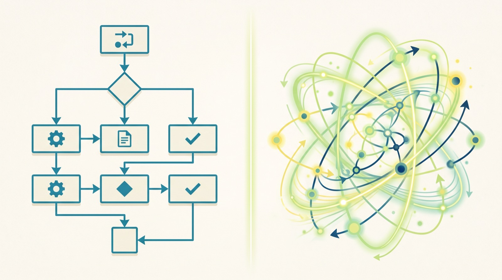
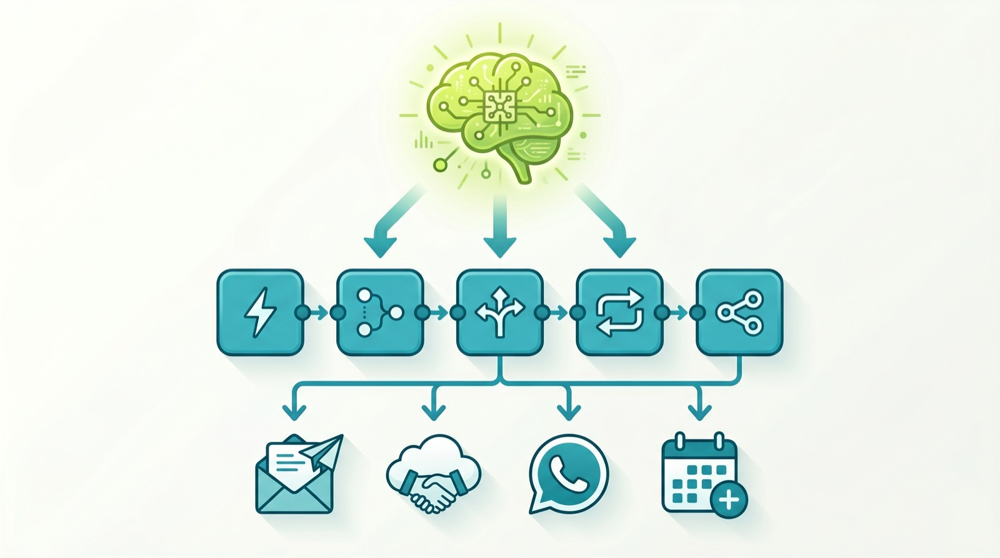

For the past decade, "automating your business" meant connecting apps. If a lead filled out a form, a workflow tool like Zapier, Make, or n8n would fire — creating a CRM record, sending a Slack notification, and dropping the lead into an email sequence. Clean, reliable, fast. It still works beautifully for exactly what it was built to do.
Then something shifted. In 2024 and 2025, a different category of software emerged: AI agents — systems that don't just execute a fixed sequence of steps but reason about a goal, decide which tools to use, and adapt when something unexpected happens. The question facing every business today isn't "should I automate?" — it's "which kind of automation does this job actually need?"
This article breaks down both paradigms clearly, compares them honestly, and explains how the most effective automation stacks in 2026 combine both.

What Workflow Automation Actually Is
n8n, Make (formerly Integromat), and Zapier are all workflow automation platforms. The model is simple: a trigger fires, and a predetermined sequence of steps runs. Every branch in the logic is one you wrote in advance. The tool does exactly what you tell it — no more, no less.
That's not a weakness. It's a feature. Workflow automation is deterministic — given the same input, you get the same output every time. You can audit it, test it, and trust it to run at 3am without a human watching. For high-volume, repetitive work with well-defined rules, it is the correct tool by a wide margin.
What n8n does particularly well
- Syncing data between systems: New invoice in QuickBooks → create a record in your CRM → notify the account manager in WhatsApp.
- Lead routing and follow-up: Form submission → enrich with Clearbit → if score > 70, assign to senior rep and send personalised email; else nurture sequence.
- Reporting and scheduled tasks: Every Monday at 8am, pull last week's ad spend from Meta and Google, compile a report, post it to Slack.
- Notification pipelines: When a review is posted on Google Maps, send it to the customer success WhatsApp group.
n8n in particular has earned its reputation in the developer and ops community because it is self-hostable (your data stays on your server), has over 400 native integrations, supports JavaScript inside nodes for custom logic, and is far cheaper at scale than hosted alternatives. Many agencies and technical teams use it as their default automation backbone.
What Agentic AI Actually Is
An AI agent is a system built around a language model that can use tools — browse the web, read files, run queries, call APIs, write and execute code — in a loop until it completes a goal. Unlike a workflow, you don't specify every step. You describe what you want the outcome to be, and the agent figures out the path.
The core loop looks like this: the model receives a goal, decides which action to take, runs that action, observes the result, then decides what to do next. This continues until the goal is met or the agent determines it can't proceed. The key word is decides — there is genuine reasoning happening at each step.
What agentic AI does particularly well
- Tasks with variable inputs: "Research this company before the sales call and produce a one-page brief" — the agent visits their website, LinkedIn, recent news, and synthesises a summary. No two briefs follow the same path.
- Exception handling: When something unexpected happens mid-process (an API returns an error, a field is missing, a document is in a different format), an agent can reason about it rather than failing silently or requiring a human to intervene.
- Multi-step reasoning tasks: Classify an incoming customer complaint, determine its urgency, draft a personalised response, check the customer's account history, and escalate if there's a billing flag — without you scripting every possible branch.
- Unstructured inputs: Process a PDF, an email thread, a voice memo, or a screenshot and extract structured data from it in context-aware ways.
A Direct Comparison
Executes a fixed, human-designed sequence of steps triggered by an event. Every decision branch is pre-written. Deterministic, fast, cheap per run, and completely auditable.
Reasons about a goal, selects tools dynamically, and adapts to results. Non-deterministic, slower, higher cost per run, but handles complexity no workflow can pre-script.
| Dimension | Workflow (n8n) | Agentic AI |
|---|---|---|
| Execution model | Deterministic — same input always gives same output | Probabilistic — reasoning path varies with context |
| Task type | Predictable, structured, rule-based | Variable, unstructured, judgment-heavy |
| Setup time | Hours to days — build once, run forever | Minutes to hours — describe goal and provide tools |
| Cost per run | Fractions of a cent at volume | Higher — LLM inference per step adds up |
| Failure mode | Breaks explicitly when input doesn't match rules | May hallucinate, take wrong path, or over-spend tokens |
| Auditability | Full — every step logged and inspectable | Partial — reasoning visible but not always predictable |
| Handles exceptions | Only if you wrote a branch for it | Yes — can reason through novel situations |
| Best for | High-volume, repetitive, structured work | Complex, variable, knowledge-intensive work |
When to Use Each — A Practical Decision Guide
The answer is almost never "one or the other." The question is which one is the right layer for a specific task. Here is a simple decision framework:
Reach for workflow automation (n8n) when:
- The task runs more than 50 times per day — cost and speed favour deterministic tools.
- Every input follows a predictable structure (form submission, webhook, scheduled query).
- You need a complete audit trail for compliance or finance.
- The logic is clear enough to map out in a flowchart.
- Reliability and uptime matter more than flexibility.
Reach for an AI agent when:
- The input is unstructured — emails, PDFs, free-text messages, voice notes.
- The task requires reading context and making a judgment (classify, prioritise, draft, summarise).
- You cannot anticipate every scenario in advance.
- The task is currently done by a knowledge worker, not a data-entry operator.
- The volume is low enough that LLM inference costs are acceptable.

The Hybrid Stack: Where This is All Heading
The most capable automation systems in 2026 aren't choosing between agents and workflows — they're stacking them. The emerging pattern is called the orchestrator-executor model: an AI agent sits at the top of the stack, receives high-level goals, reasons about what needs to happen, and then calls pre-built, tested n8n workflows to execute individual steps reliably.
Consider a real example: an inbound customer email arrives at 11pm. An agent reads it, classifies the intent, retrieves the customer's account history from your CRM, and decides this is a billing dispute that needs escalation. It then triggers an n8n workflow that creates a support ticket with the right priority, pulls the invoice PDF from your billing system, attaches it to the ticket, and sends a WhatsApp message to the on-call account manager — all without any human touching it until the manager's phone vibrates.
The agent handled the ambiguity (reading, classifying, deciding). The workflow handled the execution (reliable, fast, cheap actions across multiple systems). Neither could have done the full job alone.
n8n as an agent's toolbox
n8n has added first-class AI agent support through its built-in LangChain nodes. You can now build an agent directly inside n8n, give it a set of sub-workflows as "tools", and let it choose which tool to call at each step. This means your existing n8n automations — the ones you've spent months refining — can become the reliable, tested actions your AI agent draws on. You don't have to throw away your existing stack to go agentic.
Agent frameworks calling n8n via webhook
Alternatively, if you're building agents outside of n8n (using Claude, GPT-4o, or a framework like LangChain or CrewAI), you can expose your n8n workflows as webhook endpoints and give the agent those URLs as tools. The agent decides when to call them; n8n executes the multi-step logic reliably on the other side. This keeps your agent code clean and your action logic maintainable.
What This Means for Kuwait & GCC Businesses
Most businesses in Kuwait and the wider GCC are still in the workflow automation phase — and that's the right place to start. If you haven't yet automated the obvious, high-volume, rule-based tasks in your operation (lead handling, internal notifications, data sync, report generation), n8n or Make is your highest ROI move. The cost is low, the time to value is fast, and the reliability is excellent. For a broader view of how Kuwait businesses are implementing automation across their operations today, our guide to AI automation for Kuwait businesses covers the most common use cases and where to begin. The creative stack has also moved quickly — the integration of Claude directly into Adobe Creative Cloud is a clear example of agentic AI taking on professional production workflows that workflow tools alone could never handle.
Where agents unlock the next level
The use cases where agentic AI makes immediate sense for GCC businesses are:
- Bilingual customer communications: Arabic and English inbound messages from WhatsApp, Instagram DMs, or email — an agent reads context and drafts personalised replies faster and more accurately than any keyword-routing workflow.
- Sales intelligence before calls: An agent that researches a prospect's company, recent social activity, and mutual connections before a sales meeting — producing a brief a senior rep would otherwise spend 45 minutes writing.
- Content operations: An agent that takes a brief, gathers reference material, and drafts social posts or article outlines for human review — not replacing the creative, but compressing the groundwork.
- Contract and document review: Reading PDFs, extracting key terms, flagging deviations from a standard template, and logging findings into a spreadsheet — previously a paralegal task.
The practical sequence to follow
- Map your repetitive, structured work first. These are your n8n wins. Audit the tasks your team does more than 20 times a week that follow a clear rule.
- Identify your judgment-heavy bottlenecks. Where does work sit in someone's inbox because it needs a decision? These are your agent opportunities.
- Build the workflow layer first. You'll need reliable execution primitives before an agent can use them effectively.
- Introduce the agent layer on top. Start with one high-value agent task, measure the output quality, then expand.
How Kinetix Can Help
Kinetix builds automation stacks for businesses in Kuwait and the GCC — from the first n8n workflow to full hybrid agent systems. We've helped teams automate lead qualification, CRM enrichment, reporting pipelines, WhatsApp follow-up sequences, and AI-assisted content operations.
We don't sell a platform. We map your actual operations, identify where the real ROI is, and build the right layer for each job — whether that's a clean n8n workflow, an AI agent with memory, or a hybrid stack where both work together. If you're serious about reducing manual work in your team in the next 90 days, message us on WhatsApp or DM @kinetixkw and we'll start with a 30-minute audit of your current workflows.